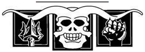

Rüzgârdaki Toz
Rand kalın, mat sis tabakasından başını kaldırdığı zaman, Muhafız ve Aes Sedai gitmişti bile. Dudaklarını yaladı ve arkadaşları ile göz göze geldi. Onlar da kendisi kadar endişeliydi. Ve daha da kötüsü hepsi ilk önce başka birinin hareket etmesini bekliyor gibiydi. Çevrelerini gece ve yıkıntılar sarmıştı. Soluklar orada bir yerdeydi, ve belki Trolloclar bir sonraki köşede bekliyorlardı. Sis dokunaçlar daha yakına süzüldü, yolu yarılamışlardı ve artık tereddüt etmiyorlardı. Avlarını seçmişlerdi. Rand aniden Moiraine'i çok özledi.
Herkes bakınıyor, ne tarafa gideceklerine karar veremiyordu. Rand, Bulut'u çevirdi ve gri at daha hızlı gitmek için dizginlerini çekiştirerek tırıs koşmaya başladı. Sanki ilk önce harekete geçmek onu diğerlerinin önderi yapmış gibi, herkes onu takip etti.
Moiraine gittikten sonra, Mordeth ortaya çıkarsa onları koruyacak kimse kalmamıştı. Ve Trolloclardan. Ve... Rand kendini düşünmeyi bırakmaya zorladı. Kırmızı yıldızı takip edecekti. Bu düşünceye tutunabilirdi.
Üç kez, atların geçemeyeceği taş ve tuğla yığınları ile tıkanmış sokaklardan döndüler. Rand diğerlerinin kısa ve keskin nefeslerini işitebiliyordu. Paniğe kapılmalarına az kalmıştı. Kendi solumasını yavaşlatmak için dişlerini sıktı. En azından onları korkmadığına ikna etmen gerekiyor. İyi iş çıkarıyorsun, yünkafa! Herkesi güven içinde buradan çıkaracaksın.
Bir sonraki köşeyi döndüler. Sisten bir duvar, kırık döşeme taşlarını dolunay kadar parlak bir ışığa boğmuştu. Atların gövdesi kadar kalın parçalar onlara doğru uzandı. Kimse beklemedi. Dönerek, sıkı bir düğüm halinde, toynak seslerinin yüksekliğine aldırmadan dörtnala kalktılar.
Önlerinde, on adım ötede iki Trolloc belirdi.
Bir an insanlar ve Trolloclar birbirlerine baktılar. İki taraf da birbirinden daha fazla şaşırmıştı. Bir çift Trolloc daha belirdi, sonra bir çift daha, sonra bir çift daha, yeni gelenler öndekilere çarptı, insanları görünce şok geçirmiş bir kitle halinde dondular. Ama donuklukları yalnızca bir an sürdü. Gırtlaktan gelen ulumalar binalardan yankılandı ve Trolloclar öne atııldı. İnsanlar bıldırcın sürüsü gibi dağıldı.
Rand'ın gri atı üç adımda dörtnala koşmaya başladı. "Bu taraftan!" diye bağırdı, ama aynı haykırışı beş ayrı ağızdan duydu. Telaşla omzunun üzerinden baktığında, arkadaşlarının aynı sayıda farklı yönde kaybolduğunu, hepsinin peşinde Trolloclar olduğunu gördü.
Rand'ın peşinde sırıkları havada sallanarak üç Trolloc koşuyordu. Bulut'un adımlarına ayak uydurduklarını fark edince derisi karıncalandı. Bulut'un boynuna eğildi ve kalın bağırışlar eşliğinde atı daha hızlı koşmaya zorladı.
İleride sokak daralıyor, kırık tepeli binalar sarhoş gibi öne eğiliyordu. Boş pencereler yavaş yavaş gümüş bir parıltı ile doldular, yoğun bir sis dışa doğru kabardı. Mashadar.
Rand omzunun üzerinden arkaya baktı. Trolloclar hâlâ elli adım arkasında koşuyorlardı; sisin ışığı hepsini açıkça görebilmesini sağlıyordu. Şimdi arkalarında bir Soluk at sürüyordu ve Trolloclar Rand'ı kovaldıkları kadar, Yarı-insan'dan da kaçıyor gibiydi. Rand'ın önünde pencerelerden yarım düzine, bir düzine dokunaç havayı yoklayarak uzandı. Bulut başını arkaya attı ve kişnedi, ama Rand topuklarını zalimce böğrüne gömdü ve at çılgınca öne atıldı.
Rand aralarından geçerken dokunaçlar katılaştı, ama delikanlı Bulut'un boynuna iyice eğilmiş, onlara bakmayı reddediyordu. İlerideki yol açıktı. Eğer birisi bana dokunursa... Bulut'u yine mahmuzladı ve at öne, gölgelere doğru sıçradı. Bulut hâlâ koşarken, Rand Mashadar'ın parıltısı azalır azalmaz arkasına baktı.
Mashadar'ın dalgalanan gri dokunaçları sokağın yarısını kapatmıştı ve Trolloclar duraklıyordu, ama Soluk bir kırbaç kaptı ve şimşek gibi bir sesle, havada kıvılcımlar yaratarak Trollocların başlarının üzerinde şaklattı. Trolloclar büzülerek Rand'ın arkasından atıldı. Yarı-insan tereddüt etti, siyah başlığı Mashadar'ın uzanan kollarını inceledi ve o da atını mahmuzladı.
Sisin kalınlaşan dokunaçları bir an kararsızca dalgalandı, sonra yılan gibi saldırdı. Her Trolloc'a en az iki tanesi yapıştı, onları gri ışığa boğdu; hayvan burunlu kafalar çığlık atmak için arkaya atıldı, ama sis açık ağızlarının üzerine kapandı, ulumalarını yedi. Soluk'un çevresine dört bacak kalınlığında dokunaç dolandı; Yarı-insan ve siyah atı kapı boşluğunu izledi ve dalgın dalgın başparmağını baltasının sapında gezdirdi. Yıkık şehrin çıkışı açık görünüyordu, ama beş dakikadır orada durmuş, izliyordu. Rüzgâr kıvırcık saçlarını savuruyor, pelerinini götürmeye çalışıyordu, ama o ne yaptığını fark etmeden pelerini bedenine sarıyordu.
Mat'in ve Emond Meydanı'ndaki başka herkesin onun ağır akıllı olduğunu düşündüğünü biliyordu. Bunun sebebi kısmen iriyarı olması ve genelde dikkatli hareket etmesi idi, hep bir şeyi kıracağından ya da birini inciteceğinden korkmuştu, çünkü birlikte büyüdüğü oğlanlardan çok daha iriydi ama elinden geldiği sürece her şeyi enine boyuna düşünmeyi tercih ediyordu. Hızlı ve dikkatsizce düşünmek Mat'i sık sık kaynar kazana atmıştı. Mat'in hızlı düşünmesinin zaman zaman Perrin'i, Rand'ı, hatta hepsini birden kaynar kazana attığı da olmuştu.
Boğazına bir şey oturdu. Işık, kaynar kazana atılmayı düşünme. Düşüncelerini yine düzenlemeye çalıştı. Dikkatli düşünmek gerekirdi.
Kapının önünde bir zamanlar bir tür meydan, içinde de dev bir çeşme vardı. Çeşmenin bir kısmı hâlâ oradaydı, büyük, yuvarlak bir havuzun içinde kırık heykeller. Kapıya ulaşmak için neredeyse yüz adım gitmesi gerekecekti ve onu meraklı gözlerden koruyacak, geceden başka bir şey yoktu. Bu hiç de hoş bir düşünce değildi. O görünmeyen izleyicileri çok iyi hatırlıyordu.
Bir süre önce şehrin içinde duyduğu boruları düşündü. Diğerlerinden bazılarının ele geçirilmiş olabileceğini düşünerek neredeyse içeri girecekti, ama sonra eğer yakalanmışlarsa, yalnız başına hiçbir şey yapamayacağı aklına geldi. Lan ne demişti, Yüz Trolloc ve dört Soluk'a karşı. Moiraine Sedai "ırmağa ulaşın," dedi.
Yine kapıyı incelemeye başladı. Dikkatli düşünmek ona pek bir şey sağlamamıştı, ama kararını vermişti. Derin gölgelerden daha az karanlık olanlara çıktı.
O bunu yaparken, meydanın karşı tarafında bir başka at belirdi ve durdu. Perrin de durdu ve baltasını yokladı; balta onu hiç teselli etmiyordu. Karanlık şekil bir Soluk'sa...
"Rand?" dedi yumuşak ve tereddütlü bir ses.
Perrin rahatlayarak uzun bir nefes verdi. "Benim, Perrin, Egwene," diye seslendi, aynı ölçüde yumuşak bir sesle. Yine de, sesi karanlıkta çok yüksek gelmişti.
Atlar çeşmenin yanında bir araya geldiler.
"Başka kimseyi gördün mü?" diye sordu ikisi aynı anda ve ikisi de başlarını iki yana sallayarak karşılık verdiler.
"Kurtulacaklar," diye mırıldandı Egwene, Bela'nın boynunu okşayarak. "Değil mi?"
"Moiraine Sedai ve Lan onlara göz kulak olur," diye yanıt verdi Perrin. "Irmağa ulaşınca hepimize birden göz kulak olacaklar." Öyle olmasını umuyordu.
Ormanda Trolloclar ya da Soluklar olsa da, kapının öte yanına geçince büyük bir rahatlama hissetti. Trollocları ve Solukları düşünmeyi bıraktı. Çıplak dallar kırmızı yıldızı görmesini engellemiyordu ve artık Mordeth'in elinden kurtulmuşlardı. O adam, Perrin'i Trolloclardan daha fazla korkutmuştu.
Kısa süre sonra ırmağa ulaşacaklar, Moiraine ile buluşacaklardı ve kadın onları Trolloclardan da kurtaracaktı. İnanıyordu, çünkü inanmaya ihtiyacı vardı. Rüzgâr dalları birbirine sürtüyor, her daim yeşil ağaçların üzerindeki yaprakları ve iğneleri hışırdatıyordu. Bir gece şahininin yalnız haykırışı karanlıkta süzüldü ve Perrin ile Egwene, ısınmak için birbirlerine sokuluyormuş gibi atlarını yaklaştırdılar. Çok yalnızdılar.
Arkalarından bir yerden bir Trolloc borusu öttü, avcıları acele etmeye zorlayan hızlı, inleyen ötüşler. Sonra kalın, yarı-insan ulumalar, borudan hız alarak arkalarında yükseldi. Yaratıklar insan kokusu alınca ulumalar keskinleşti.
Perrin, "Hadi!" diye bağırarak atını dörtnala kaldırdı. Egwene de ona yetişti ve ikisi çizmelerini topuklayarak, çıkardıkları gürültüye ve onlara çarpan dallara aldırmadan kaçtılar.
Solgun ay ışığı kadar içgüdülerinin de kılavuzluğu altında ağaçların arasından geçerken Bela geride kaldı. Perrin arkaya baktı. Egwene kısrağını tekmeledi ve dizginleri salladı, ama bir işe yaramıyordu, Seslere bakılırsa, Trolloclar yaklaşıyordu. Dizginleri, kızın geride kalmamasını sağlayacak kadar çekti.
Onca dönüşten sonra, kılavuz yıldızı gözden kaybetmişlerdi.
"Ben yine de orada diyorum," dedi Mat, sağına işaret ederek. "En son kuzeye gidiyorduk ve bu da şu taraf doğu demek."
"İşte orada," dedi Thom aniden. Sol taraftaki dolaşık dalların arasından, doğrudan kırmızı yıldıza işaret etti. Mat alçak sesle bir şeyler mırıldandı.
Rand göz ucuyla bir hareket yakaladı ve o anda bir Trolloc bir ağacın arkasından sessizce, sırığını sallayarak sıçradı. Rand atını topukladı ve iki Trolloc daha gölgelerin arasından atılırken at öne fırladı. Bir halat halkası Rand'ın boynuna sürtündü, belkemiğinden aşağı bir ürperti yaydı.
Bir ok, hayvansı yüzlerden birini gözünden yakaladı, sonra atları ağaçların arasında koşarken Mat yetişti. Rand ırmağa doğru ilerlediklerini fark etti, ama bunun bir işe yarayacağından emin değildi. Trolloclar arkalarından koşuyordu, neredeyse uzanıp atlarının dalgalanan kuyruklarını yakalayacak kadar yakındılar. Yarım adım daha yaklaşsalar sırıklar hepsini eyerlerinden aşağı indirirdi.
Rand, boynu ile halkalar arasına daha fazla mesafe koymak için gri atın boynuna eğildi. Mat'in yüzü neredeyse tamamen atının yelesine gömülmüştü. Ama, Rand Thom'un nerede olduğunu merak etti. Âşık, üç Trolloc da oğlanların peşinden gittiğinden yalnız kalmasının daha iyi olacağına mı karar vermişti?
Thom'un atı aniden gecenin içinde, Trollocların arkasında belirdi. Âşığın eli arkaya, sonra öne fırlarken, Trollocların yalnızca şaşkınlık içinde arkalarına bakacak kadar zamanları oldu. Ay ışığı çeliğin üzerinden yansıdı. Bir Trolloc öne devrildi, yuvarlandı, ve sonunda bir yığın halinde yerde kaldı. Bir ikincisi çığlık atarak diz üstü çöktü, iki eliyle sırtını pençelemeye başladı. Üçüncüsü hırladı, bir ağız dolusu keskin dişi ortaya çıkardı, ama arkadaşları devrilirken, dönüp karanlıkta kayboldu. Thom'un eli kırbaç savurma hareketini yine yaptı ve Trolloc çığlık attı, ama yaratık koşarken çığlıkları uzakta kayboldu.
Rand ve Mat doğrulup Âşığa baktı.
"En iyi bıçaklarım," diye mırıldandı Thom, ama atından inip bıçaklarını almak için hiçbir şey yapmadı. "Kaçan başkalarını da getirecek. Umarım ırmak çok uzak değildir. Umarım..." Bunu söylemek yerine başını iki yana salladı ve atını sürdü. Rand ve Mat onun peşine düştüler.
Kısa süre sonra, ağaçların gece siyahı suyun tam kenarında büyüdükleri alçak kıyıya ulaştılar. Suyun ay ışığı ile süslü yüzeyi rüzgârla dalgalanıyordu. Rand karşı kıyıyı hiç göremiyordu. Irmağı karanlıkta, sal üzerinde geçme fikrinden hoşlanmıyordu, ama bu kıyıda kalma fikrinden de hiç hoşlanmıyordu. Zorunlu kalırsam yüzerim bile.
Irmaktan uzakta bir yerde bir Trolloc borusu öttü, karanlığın içinde, keskin, telaşlı ve hızlı bir ötüş. Yıkıntılardan çıktıklarından beri duydukları ilk boru sesiydi. Rand bunun, diğerlerinden bazılarının yakalandığı anlamına mı geldiğini merak etti.
"Tüm gece burada kalmanın faydası yok," dedi Thom. "Bir yön seçin. Aşağı mı, yukarı mı?"
"Ama Moiraine ve diğerleri herhangi bir yerde olabilir," diye itiraz etti Mat. "Seçeceğimiz herhangi bir yön bizi onlardan uzaklaştırabilir."
"Olabilir." Thom atına dil şaklatarak ırmağın aktığı yöne döndü ve kıyı boyunca ilerlemeye başladı. "Olabilir." Rand Mat'e baktı. Mat omuzlarını silkti ve Âşığın peşine takıldılar.
Bir süre hiçbir şey değişmedi. Kıyı bazı yerlerde daha yüksek, bazılarında daha alçaktı. Ağaçlar bazen gürleşiyor, bazen küçük açıklıklarda seyreliyordu, ama gece, ırmak ve rüzgâr hep aynıydı, soğuk ve karanlık. Ve hiç Trolloc yoktu. Bu, Rand'ın vazgeçmek istemeyeceği bir değişiklikti.
Sonra ileride ışık gördü, tek bir nokta. Yaklaştıkları zaman ışığın, bir ağacın üzerindeymiş gibi ırmaktan yüksekte olduğunu gördüler. Thom hızını artırdı ve alçak sesle bir ezgi mırıldanmaya başladı.
Sonunda ışığın kaynağını seçebildiler, büyük bir tüccar teknesinin direklerinden birine asılmış bir lamba. Tekne, ağaçların arasında, bir açıklıkta, geceyi geçirmek için bağlanmıştı. Neredeyse on sekiz metreydi, akıntı ile hafifçe kıpırdanıyor, ağaçlara bağlanmış palamarları Çekiştiriyordu. Halatlar rüzgârda mırıldanıyor, gıcırdıyordu. Lamba güvertede ayın verdiği aydınlığı ikiye katlıyordu, ama görünürde kimse yoktu.
"Şimdi bu," dedi Thom atından inerken, "Aes Sedai'nin salından daha iyi, değil mi?" Ellerini kalçalarına dayayıp durdu.
Rand'ın sırtına aniden bir şey indi ve onu güverteye yıktı. Kılıcı uzanan elinden yuvarlandı. Rand ağzı açık, nefes almaya çalışarak kılıca uzandı. Kasları acılı bir yavaşlıkla tepki verdi; Rand, sümüklüböcek gibi kıvrandı. Bırakılmak isteyen adam kılıca korku dolu, kıskanç bir bakış fırlattı, sonra gölgelerin içinde kayboldu.
Rand acı içinde omzunun üzerinden baktı ve şansının tükendiğini anladı. Kurt burunlu bir Trolloc küpeştenin üzerinde denge kurmuş, duruyor, elinde sırtına indirdiği sırığın kırık ucu, ona bakıyordu. Rand kılıcına ulaşmaya, uzaklaşmaya çalıştı, ama kolları ve bacakları sarsılarak hareket ediyordu ve istediklerinin ancak yarısını yapabiliyordu. Hepsi sallandı, tuhaf yönlere gitti. Göğsü demir bantlarla bağlanmış gibi geliyordu; gözlerinin önünde gümüş noktalar uçuşuyordu. Çılgınca bir kaçış yolu aradı. Trolloc ona saplayacakmış gibi ucu çentikli sırığı kaldırdığında, zaman yavaşlar gibi oldu. Yaratık, Rand'a bir rüyada hareket ediyormuş gibi geldi. Kalın kolun arkaya gitmesini izledi; kırık sırığın karnını deldiğini, o yırtıcı acıyı hissetmeye başlamıştı bile. Ciğerlerinin patlayacağını sandı. Öleceğim! Işık bana yardım et, öleceğim...! Trolloc'un kolu mızrakla öne savrulmaya başladı ve Rand tek bir feryat için nefes buldu. "Hayır!"
Gemi aniden sallandı ve bir seren direği gölgelerin içinden savrulup, kemik kırılma sesleri eşliğinde Trolloc'un göğsüne çarparak, öteki yana devirdi.
Rand bir an nefes nefese, yukarıda öne arkaya sallanan seren direğine bakarak yattı, kaldı. Bu, şansımın son kırıntısını da tüketmiş olmalı, diye düşündü. Bundan sonra başkası kalmış olamaz.
Titreyerek ayağa kalktı ve kılıcını aldı. Bu sefer Lan'in öğrettiği gibi iki eliyle tuttu, ama güvertede kılıcını üzerinde kullanabileceği hiçbir şey kalmamıştı. Tekne ile kıyı arasındaki siyah su dolu boşluk hızla genişliyordu, Trollocların haykırışları arkada, gecenin içinde soluyordu.
Kılıcını kınına sokup, küpeşteye dayanırken, ceketi dizlerine kadar inen gürbüz bir adam yaklaşıp dik dik ona baktı. Uzun saçları kaslı omuzlarına dökülüyordu ve üst dudağını çıplak bırakan sakalı yuvarlak yüzünü çevreliyordu. Yuvarlak, ama yumuşak değil. Seren direği yine savruldu ve sakallı adam onu yakalarken bakışlarını bir anlığına o tarafa çevirdi; direk geniş avucuna çarparken kısa bir şat sesi çıkardı.
"Geldi!" diye bağırdı. "Talih! Neredesin, Gelb?" O kadar hızlı konuşuyordu, sözcükler o kadar birbirine giriyordu ki, Rand onu arılayamıyordu. "Kendi gemimde benden saklanamazsın! Floran Gelb'i buraya getirin!"
Mürettebattan boğagözü lambası taşıyan bir adam geldi ve iki kişi ince yüzlü bir adamı lambanın düşürdüğü ışık çemberine ittirdi. Rand bunun ona tekneyi öneren adam olduğunu gördü. Adamın gözleri devamlı geziniyor, asla toplu adamın gözleri ile karşılaşmıyordu. Toplu ve kısa boylu adamın kaptan olduğunu düşündü Rand. Rand'ın çizmelerinden birinin çarptığı yerde, Gelb'in alnında bir yara oluşmuştu.
"Bu seren direğini bağlaman gerekmiyor muydu, Gelb?" diye sordu kaptan şaşırtıcı bir sakinlikle, ama hâlâ eskisi kadar hızlı konuşarak.
Gelb gerçekten şaşkın görünüyordu. "Ama bağladım. Sıkı sıkı bağladım. Bazen elim biraz ağır oluyor, kabul ediyorum, Kaptan Domon, ama işlerimi hep yaparım."
"Demek elin ağır, öyle mi? İş uyumaya gelince elin hiç de ağır değil ama. Nöbet tutman gerekirken uyumaya gelince. Bir adam hepimizi öldürebilirdi, sırf senin yüzünden."
"Hayır, Kaptan, hayır. Onun yüzünden oldu." Gelb doğrudan Rand'ı işaret etti. "Ben gerektiği gibi nöbet tutuyordum, ama o gizlice yaklaştı ve bana bir sopayla vurdu." Başındaki yaraya dokundu, irkildi ve dik dik Rand'a baktı. "Onunla mücadele ettim, ama sonra Trolloclar geldi. Bu adam onların dostu, Kaptan. Bir Karanlıkdostu. Trolloclarla işbirliği yapıyor."
"Benim yaşlı büyükannemle işbirliği yapıyor!" diye kükredi Kaptan Domon. "Son seferinde seni uyarmamış mıydım, Gelb? Beyazkoprü'de gidiyorsun! Seni gemiden şimdi indirmeden gözümünün önünden kaybol." Gelb lamba ışığından fırladı ve Domon boşluğa bakarak, ellerini açıp kapayarak durdu. "Bu Trolloclar beni takip ediyorlar. Neden rahat bırakmıyorlar? Neden?"
Rand küpeştenin üzerinden baktı ve kıyının artık görülmediğini fark edince şok geçirdi. Teknenin kıçındaki uzun dümenin başında iki adam vardı ve şimdi her yanda altışar adam kürek çekiyor, gemiyi bir su böceği gibi ırmağın üzerinde sürüklüyordu.
"Kaptan," dedi Rand, "orada arkadaşlarımız var. Geri dönüp onları da alırsanız, eminim sizi ödüllendireceklerdir."
Kaptanın yuvarlak yüzü hızla Rand'a döndü ve Thom ile Mat belirince ifadesiz bakışlarına onları da dahil etti.
"Kaptan," diye başladı Thom eğilerek, "İzin verin,.."
"Siz aşağı gelin," dedi Kaptan Domon, "gelin de, gemime ne tür şeyler binmiş, göreyim. Gelin. Talih beni terk etsin, birisi şu lanet sereni bağlasın!" Gemiciler seren direğini almak için koşarken ayaklarını vurarak geminin kıçına yürüdü. Rand ve iki arkadaşı takip etti.
Kaptan Domon'un kıç tarafta, kısa bir merdiven inilerek ulaşılan düzenli bir kamarası vardı. İçerideki her şey doğru yerinde olduğu izlenimi uyandırıyordu, kapının arkasındaki çengellere asılı ceketlere ve pelerinlere kadar. Kamara, geminin eni boyunca uzanıyordu, bir yanda geniş bir yatak, diğer yanda ağır bir masa vardı. Yalnızca bir tane yüksek sırtlı, sağlam kollu sandalye vardı. Kaptan sandalyeye oturdu ve diğerlerine de, kamaradaki tek mobilyalar olan muhtelif sandıkların ya da bankların üzerinde oturmalarını işaret etti. Yüksek bir homurtu, Mat'in yatağın üzerine oturmasını engelledi.
"Şimdi," dedi kaptan, hepsi oturduktan sonra. "Benim adım Bayie Domon; Serpinti'nin, yani bu geminin sahibi ve kaptanıyım. Siz kimsiniz, bu ıssız yerde ne işiniz var ve başıma açtığınız bela yüzünden neden sizi küpeşteden aşağı atmayayım?"
Rand hâlâ Domon'un hızlı konuşmasını takip etmekte güçlük çekiyordu. Kaptanın söylediklerinin son kısmını çözdükten sonra şaşkınlık içinde gözlerini kırpıştırdı. Bizi küpeşteden aşağı atmak mı?
Mat telaşla konuştu, "Size sorun yaratmak istemedik. Biz Caemlyn'e gidiyorduk ve oradan sonra..."
"Ve sonra rüzgâr bizi nereye götürürse," diye araya girdi Thom. "Işıklar böyle yolculuk eder, rüzgârdaki tozlar gibi. Ben bir âşığım, anlıyor musunuz, adım Thom Merrilin." Sanki kaptan onları gözden kaçırabilirmiş gibi, pelerinini öyle kaydırdı ki, rengarenk yamalar kıpırdandı. "Bu iki köylü hödük çırağım olmak istiyorlar, ama henüz onları kabul edeceğimden emin değilim." Rand sırıtmakta olan Mat'e baktı.
"Bunların hepsi iyi, güzel, adamım," dedi Kaptan Domon sakin sakin, "ama bana hiçbir şey anlatmıyor. Hatta daha da az. Talih beni dürtsün, orası bildiğim hiçbir yerden Caemlyn'e giden yolların üzerinde değil."
"Şimdi, bu başlı başına ayrı bir hikâye," dedi Thom ve hemen anlatmaya başladı.
Thom'a göre, kış karları yüzünden Baerlon'un ötesinde, Puslu Dağlar'da bir madenci kasabasında kısıtlı kalmıştı. Oradayken, Aridhol denilen bir şehirde, Trolloc Savaşlarından kalan bir hazineye dair efsaneler duymuştu. Tesadüf eseri, yıllar önce Illian'da, bir zamanlar hayatını kurtardığı bir arkadaşı ölüm döşeğinde ona Aridhol'ün yerini gösteren bir harita vermiş, son nefesinde haritanın Thom'u zengin edebileceğini fısıldamıştı. Thom efsaneleri duyana kadar buna hiç inanmamıştı. Karlar yeterince eridikten sonra birkaç arkadaşı ile yola çıkmıştı. Bu çırak adayları da onlar arasındaydı. Büyük güçlüklerle geçen bir yolculuktan sonra şehrin yıkıntısını bulmuşlardı. Ama hazinenin Dehşetlordları'ndan birine ait olduğu, onu Shayol Ghul'e götürmek için Trollocların gönderildiği anlaşılmıştı. Karşılaştıkları neredeyse her tehlike Trolloclar, Myrddraaller, Draghkar, Mordeth, Mashadar hikâye boyunca bir ya da öteki noktada başlarına bela oldu, ama Thom öyle anlatıyordu ki, sanki her biri kişisel olarak onun peşindeydi ve onlarla büyük bir beceriyle başa çıkmıştı. Çoğunu Thom'un gösterdiği bir sürü kahramanlıktan sonra, Trolloclar onları kovalarken kaçmışlardı, ama geceleyin arkadaşlarından ayrı düşmüşler, sonunda Thom ve iki arkadaşı onlara kalan son yere sığınmışlardı, Kaptan Domon'un sevinçle gördükleri teknesine.
Âşık sözünü bitirdiği zaman, Rand ağzının bir süredir açık durduğunu fark etti ve bir tıkırtı ile kapattı. Mat'e baktığında, onun da dört açılmış gözlerle Aşığı izlediğini gördü.
Kaptan Domon parmakları ile sandalyesinin kolunu dövdü. "Çoğu kişinin inanmayacağı bir hikâye. Elbette, ben Trollocları gördüm, değil mi?"
"Her sözcüğü doğru," dedi Thom yumuşak sesle. "İlk ağızdan."
"Yanınızda hazine var mı?"
Thom üzüntüyle ellerini açtı. "Heyhat, yanımıza alabildiğimiz azıcık hazine, son Trolloclar belirdiği zaman kaçan atlarımızın üzerindeydi. Benim elimde tek kalan flütüm ve arpım, birkaç bakır metelik ve sırtımdaki giysiler. Ama inan bana, o hazineden tek bir şey bile istemezdin. Karanlık Varlık'ın lekesini taşıyor. En iyisi onu yıkıntılara ve Trolloclara bırakmak."
"Demek yolculuğunuzun karşılığını ödeyecek paranız yok. Karşılığını ödemediği sürece kendi kardeşimi bile tekneme almam, özellikle de peşinden küpeştemi biçen ve halatlarımı doğrayan Trolloclar getirmişse. Neden geldiğiniz yere yüzmenize izin verip, sizden kurtulmayayım?"
"Bizi kıyıya bırakmazsın, değil mi?" dedi Mat. "Orada Trolloclar varken bırakmazsın."
"Kıyıdan bahseden kim?" diye yanıt verdi Domon kuru kuru. Onları bir süre inceledi, sonra ellerini masanın üzerine koydu. "Bayie Domon mantıklı bir adamdır. Eğer bir çıkış yolu varsa, sizi kenardan aşağı atmam. Şimdi, görüyorum ki, çıraklarından birinin bir kılıcı var. Benim de iyi bir kılıca ihtiyacım var ve iyi bir adam olup, o kılıç karşılığında Beyaznehir'e kadar teknemde yolculuk yapmanıza izin vereceğim."
Thom ağzını açtı, ama Rand telaşla konuştu, "Hayır!" Tam kılıcı ona birilerine versin diye vermemişti. Bronz balıkçılı hissederek elini kabzanın üzerinde gezdirdi. Kılıç yanında olduğu sürece, Tam yanındaymış gibi hissedecekti.
Domon başını iki yana salladı. "Eh, hayırsa, hayırdır. Ama Bayie Domon bedava yolculuk yaptırmaz, kendi annesine bile."
Rand gönülsüzce ceplerini boşalttı. Çok şey yoktu, birkaç bakır Para ve Moiraine'in verdiği gümüş para. Gümüşü kaptana uzattı. Mat bir saniye sonra içini çekti ve aynısını yaptı. Thom dik dik onlara baktı, ama yüzündeki ifade öyle çabuk bir gülümseme ile yer değiştirdi ki, Rand dik bakışları gördüğünden emin olamadı.
Kaptan Domon beceriyle iki şişman, gümüş parayı delikanlıların birinden aldı, arkasındaki pirinç kayışlı sandıktan küçük bir teraziye şıngırdayan bir kese çıkardı. Dikkatle ölçtükten sonra paraları keseye bıraktı ve ikisine daha ufak gümüş ve bakır paralar verdi. Daha çok bakır. "Beyaznehir'e kadar," dedi, deri ciltli defterine düzenli kayıtlar alarak.
"Bu, Beyaznehir yolculuğu için pahalı," diye homurdandı Thom.
"Artı tekneme verilen zararlar," diye yanıt verdi kaptan sakin sakin. Teraziyi ve keseyi sandığa koydu ve hoşnutluk içinde kapattı, "Artı, biraz da Trollocları üzerime getirdiğiniz ve bu yüzden bol bol sığ yeri bulunan bu yeri gece aşmam gerektiği için."
"Ya diğerleri?" diye sordu Rand. "Onları da alacak mısın? Şimdiye dek ırmağa ulaşmışlardır, ya da kısa süre sonra ulaşacaklardır ve direğindeki o lambayı göreceklerdir."
Kaptan Domon'un kaşları şaşkınlık içinde kalktı. "Yerimizde kıpırdamadan kaldığımızı mı düşünüyorsun, delikanlı? Talih beni dürtsün, sizin tekneye bindiğiniz yerden dört buçuk, beş kilometre uzaktayız. Trolloclar adamlarımın küreklere tüm güçleriyle asılmasına sebep oldu. Trollocları istemedikleri kadar iyi tanırlar ve akıntı da yardımcı oluyor. Ama fark etmez. Kıyıda ihtiyar büyükannem olsa bile bu gece bir daha kıyıya yanaşmam. Belki de Beyaznehir'e varana kadar yanaşmam. Bu geceden önce ensemde Trolloc nefesini yeterince duydum ve elimden geliyorsa daha fazlasını istemiyorum."
Thom ilgiyle öne eğildi. "Daha önce Trolloclarla karşılaştın mı? Son zamanlarda mı?"
Domon, Thom'a kısık gözlerle bakarak tereddüt etti, ama konuştuğu zaman sesinde yalnızca tiksinti vardı. "Kışı Saldaea'da geçirdim, adamım. Benim seçimim değil, ama ırmak erken dondu ve buz geç kırıldı. Maradon'daki en yüksek kulelerden Afet'i görebilirsin, diyorlar, ama benim umurumda değil. Ben orayı daha önce gördüm ve hep Trollocların çiftliklere saldırdığından falan bahsediliyordu. Ama geçtiğimiz kış her gece bir çiftlik yakıldı. Evet, ve zaman zaman bütün bir köy. Şehir duvarlarına kadar geldiler. Ve bu yeterince kötü değilmiş gibi, insanlar bunun Karanlık Varlık'ın hareketlenmeye başladığı, Son Günlerin yaklaştığı anlamına geldiğini söylüyorlardı." Ürperdi ve sanki bu düşünce kafatasını karıncalandırıyormuş gibi kafasını kaşıdı. "İnsanların Trollocların masal olduğuna, anlattığım hikâyeleri yolcuların yalanlarından başka bir şey olmadığına inandığı yerlere gelmek için sabırsızlanıyorum."
Rand dinlemeyi bıraktı. Karşı duvara baktı, Egwene ve diğerlerini düşündü. O Serpinti'de güvendeyken, onların hâlâ gecenin içinde bir yerde olması hiç doğru gelmiyordu. Kaptanın kamarası artık eskisi kadar rahat gelmiyordu.
Thom onu ayağa kaldırdığında şaşırdı. Âşık, omzunun üzerinden Kaptan Domon'a bu köylü hödükler için özürler dileyerek onu ve Mat'i merdivene doğru ittirdi. Rand tek söz söylemeden merdiveni tırmandı.
Güverteye ulaştıklarında Thom işitecek kimse olmadığından emin olmak için hızla çevresine bakındı, sonra gürledi: "Siz gümüşlerinizi saçmakta acele etmeseydiniz birkaç şarkı ve hikâye karşılığında teknede kalmamızı sağlayabilirdim."
"Ben o kadar emin değilim," dedi Mat. "Bizi ırmağa atmak konusunda ciddi gibiydi."
Rand yavaşça küpeşteye yürüdü, yaslandı ve geceye bürünmüş ırmağa baktı. Kıyıda bile, siyahlıktan başka hiçbir şey göremiyordu. Bir dakika sonra Thom elini omzuna koydu, ama o kıpırdamadı.
"Yapabileceğin bir şey yok, evlat. Dahası, muhtemelen onlar... Moiraine ve Lan'in yanında güvendedirler. Onları kurtarmak için o ikisinden daha iyisini düşünebiliyor musun?"
"Onu gelmemesi için ikna etmeye çalıştım," dedi Rand.
"Elinden geleni yaptın, evlat. Kimse daha fazlasını isteyemez."
"Ona göz kulak olacağımı söylemiştim. Daha fazla çabalamalıydım." Küreklerin gıcırtısı ve halatların rüzgârda mırıldanması yaslı bir ezgi yaratıyordu. "Daha fazla çabalamalıydım," diye fısıldadı.